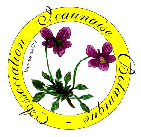

http://fleursauvageyonne.github.io/Une "page perso" consacrée aux fleurs sauvages | ||||||||||||||||||||||||
 | ||||||||||||||||||||||||
ENTREZ Welcome Bienvenidos ou cliquez sur un carré de couleur pour en savoir plus | ||||||||||||||||||||||||
 membre de l'Association Icaunaise de Botanique   qui vous remercie de votre visite. | ||||||||||||||||||||||||
Un botaniste célèbre, Alphonse de Candolle, écrivait : Mais, pensons-nous, pourquoi pas de sentir... Lire : Philosophie de l'odorat | ||||||||||||||||||||||||
ENTREZ Welcome Bienvenidos | ||||||||||||||||||||||||
| ||||||||||||||||||||||||
| Enumeratio silvaticorum agrorumque florum Icaunae, in Burgundia (Gallia celtica) FLORES SILVESTRES del Yonne, Borgoña (Francia) WILD FLOWERS of Yonne, Burgundy (France) | ||||||||||||||||||||||||
Vos suggestions et critiques seront les bienvenues. Pour nous écrire | ||||||||||||||||||||||||
| Mise à jour : septembre 2014 | ||||||||||||||||||||||||